Galeri
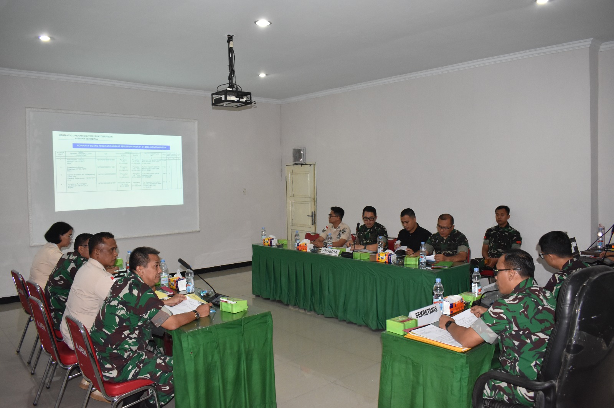
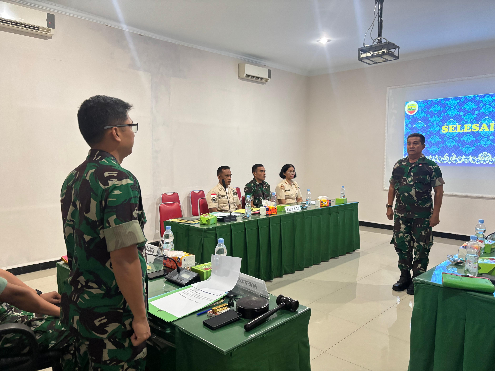
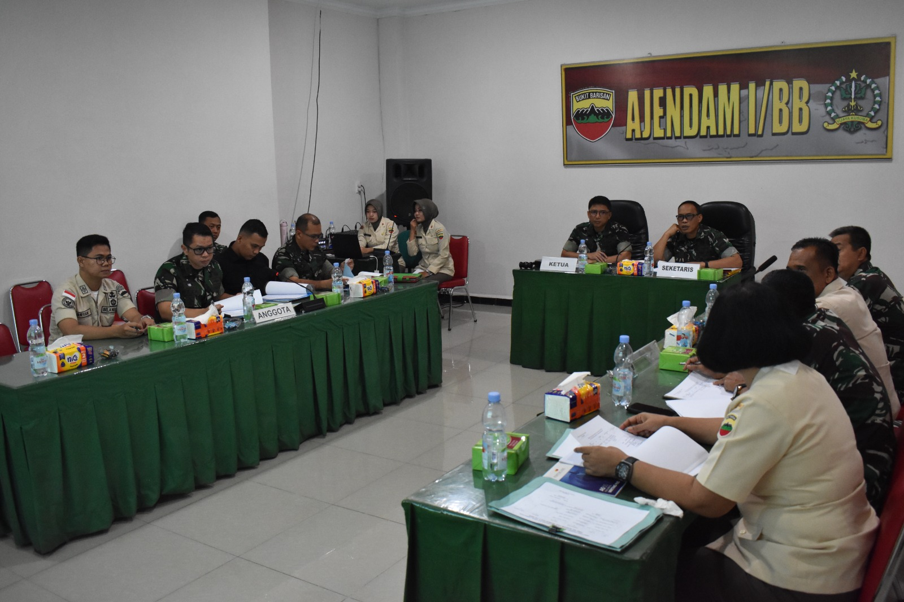
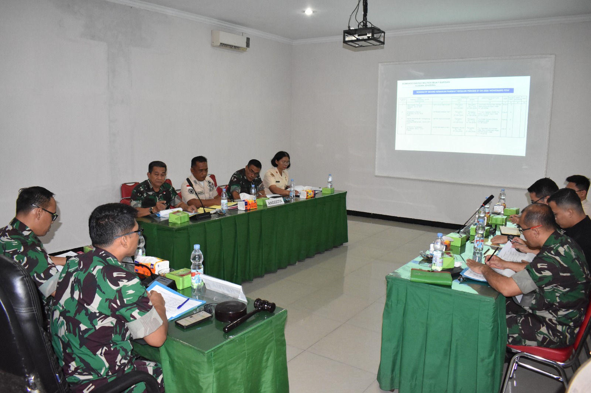
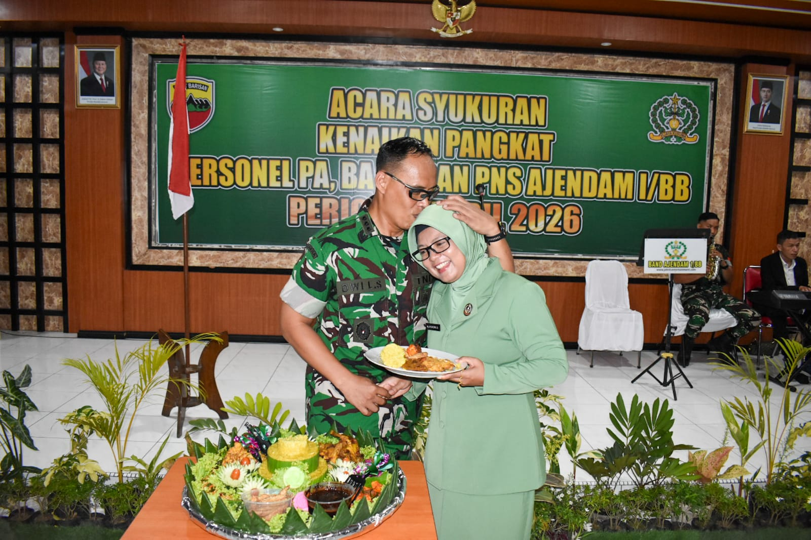
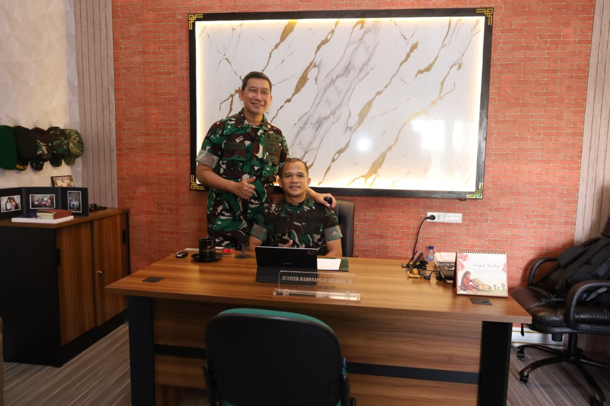
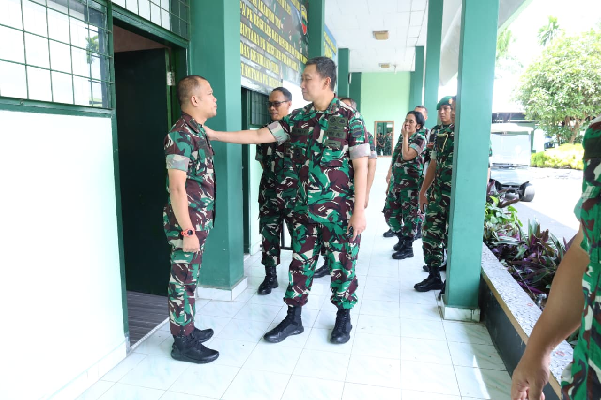

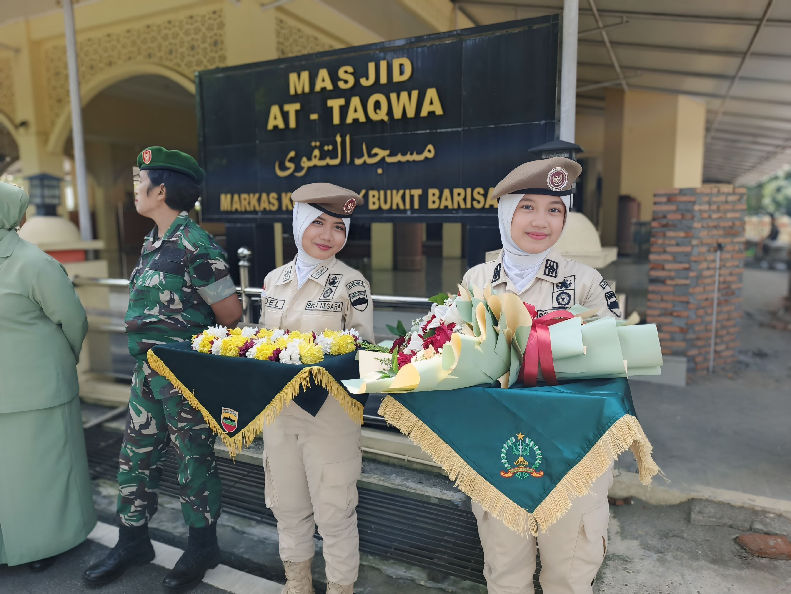
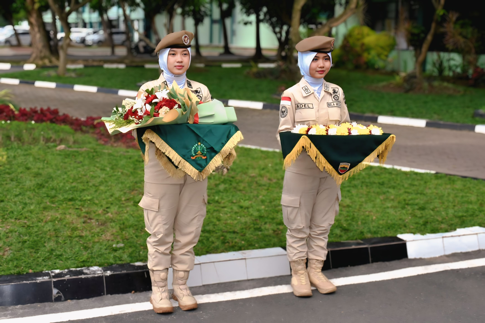
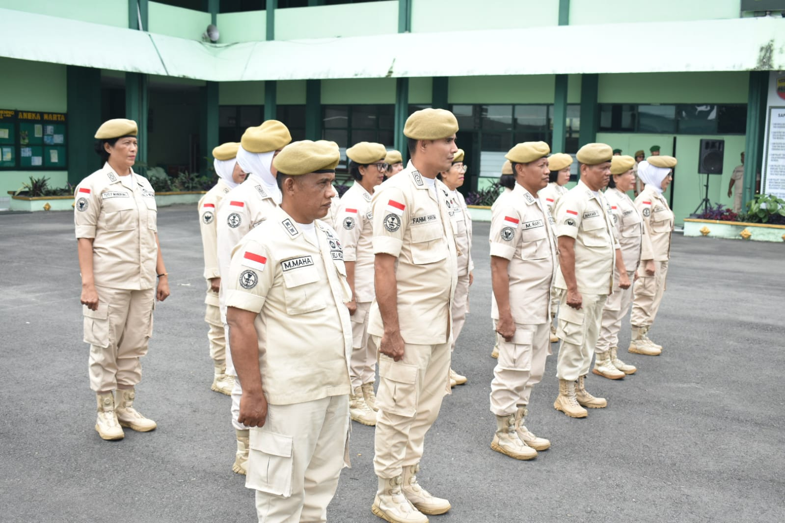
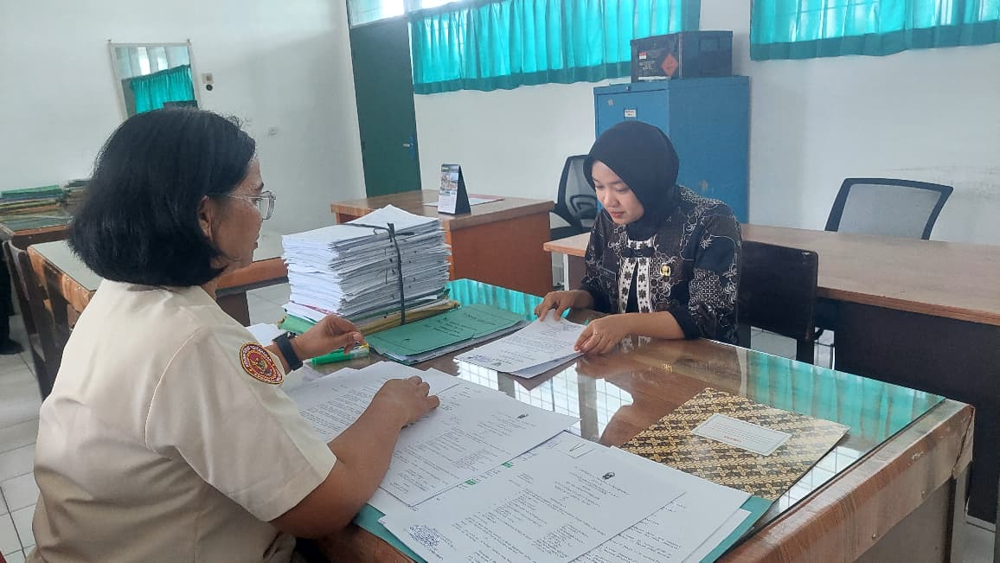
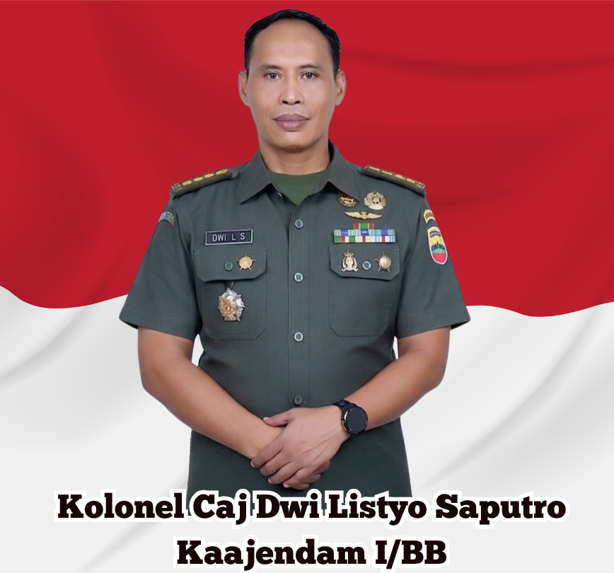
Platform digital terpadu untuk optimalisasi monitoring dan penyebaran informasi kenaikan pangkat PNS secara transparan, terstandar, dan tepat waktu.
Semester 1
Januari - JuniSemester 2
Juli - DesemberLoading...
*Data otomatis dari Google Sheet(Bahan administrasi dari satuan kerja)
Pemeriksaan kelengkapan dan keabsahan dokumen
Penilaian usulan kenaikan pangkat
Pengajuan berkas untuk proses lanjutan
Pertimbangan teknis dari Badan Kepegawaian Negara
Penetapan resmi kenaikan pangkat
Kep disampaikan ke satuan pengusul
Sistem analisis otomatis untuk memprediksi waktu kenaikan pangkat Anda berdasarkan data kepegawaian.
Dasar:










